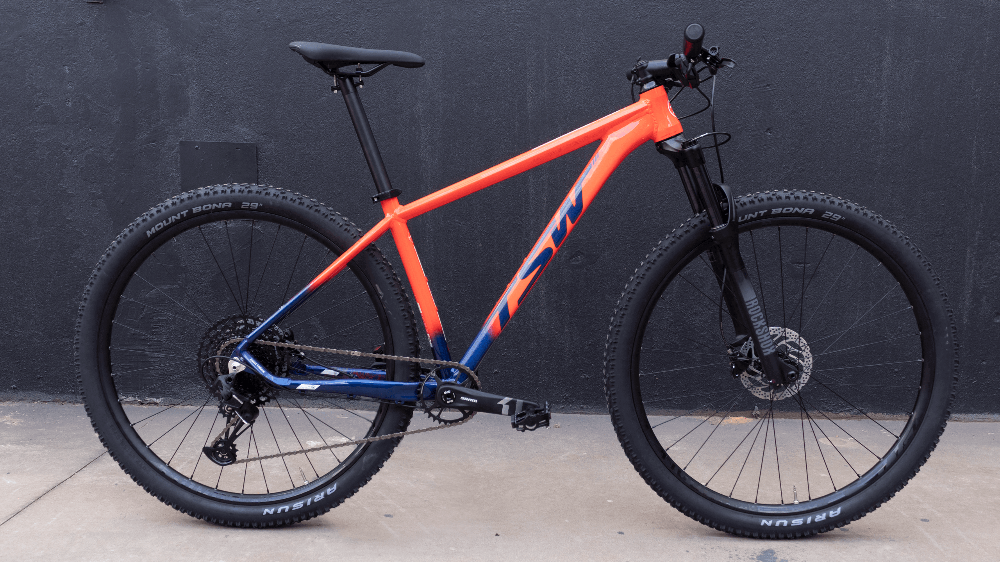

ARO 29
- Bicicleta TSW Yukon | SM-12 | 2021/2022
- 
- DE R$2400 POR R$2000
- Bicicleta Aro 29 Tsw Ride
-
Queridinha do público, TSW Ride 21 v. é solução completa para encantar os iniciantes. Antes de mais nada, cada pessoa traz histórias,
necessidades, anseios .Assim, o que buscamos é desenvolver uma bike adequada a cada perfil. É dessa forma, estudando cada ciclista, que encontramos a melhor solução em todas as categorias. Mas por que estamos falando isso? Simples: é porque a TSW Ride é um dos nossos mais bem-sucedidos exemplos de como desenvolvemos uma bike. Ela é linda, consistente e, sobretudo, amada pelos seus dono
- DE R$2300 POR R$2150
- OGGI HACKER SPORT
- Se você pedala por lazer e está começando a pedaladas mais longas, a procura pela bicicleta perfeita pode ter chegado ao fim: a Hacker Sport é a solução. Bike com excelentes componentes, todos de marca reconhecidas mundialmente, conta com a configuração ideal para quem procura qualidade e garantia, indicada para quem esta começando no mundo do pedal e procura um modelo para a cidade e estradões.
A Hacker Sport vem com 21 velocidades e ainda conta com suspensão dianteira Oggi, com 100mm de curso.
- POR R$1999
- Bicicleta Aro 29 Ksw
- A bicicleta KRW S60 foi desenvolvida para quem quer realizar um passeio e pegar trilhas leves. Possui câmbios Shimano. Com seu quadro em alumínio 6061, fornece segurança e leveza no seu pedal. Possuí também freio a disco, que oferece uma maior segurança. Possuí diversas cores que garante um estilo próprio para você.
- Por R$999